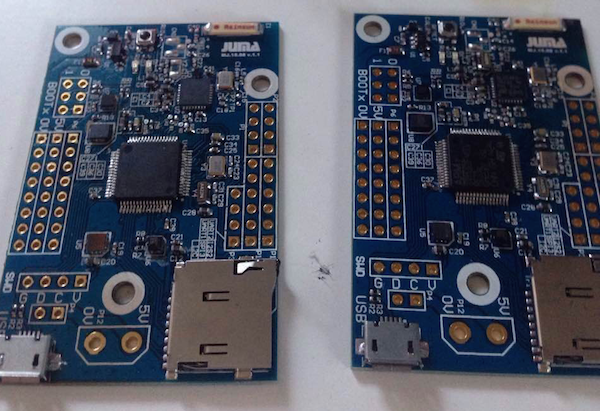

CANNON是基于ST BlueNRG设计的高性能开发板，它的板载资源丰富、处理能力强大，并能够远距离传输蓝牙信号。

1）ARM 32位 Cortex-M4 CPU，最高可达84Mhz frequency。
2）512Kbytes Flash存储，96Kbytes SRAM。
3）1.7V3.6V供电电压，可外接426Mhz外部晶振，CANON外接的为16Mhz晶振和为RTC校准提供的32.768k晶振。
4）3组I2C接口，CANON使用了I2C1，留出了I2C1与I2S2测试接口。
5）4组SPI接口，CANON使用了SPI2，留出了SPI3测试接口。
6）3组USART接口，CANON留出了UART1、UART2。
7）GPIO测试接口，CANON留出了GPIO_A0、GPIO_A1、GPIO_A8、GPIO_B0、GPIO_C13、GPIO_B8、GPIO_C5、GPIO_C7。
8）SDIO接口CANON安装了TF插槽。
下载spec：
DM00025644.pdf
1）支持Master与Slave单模
2）嵌入式标准蓝牙低功耗协议栈的GAP、GATT、SM、L2CAP、LL、RF_PHY层
3）profile层在MCU实现
4）发射功率最高可达+8dbm
5）MCU通过SPI控制BlueNRG
6）16Mhz与32.768khz外部晶振
7）应用：智能手表、智能健康设备、远程控制、家居与工业自动化、生活辅助、移动终端外设、PC外设
下载spec：
DM00092683.pdf
1）0~100%的相对湿度范围
2）湿度精确度： ± 4.5% rH, 20 to +80% rH
3）温度精确度： ± 0.5 °C,15 to +40 °C
4）16位温湿度数据输出
5）SPI与I2C接口
6）应用：空气温度与流动性监测、空气湿度计、冰箱、可穿戴设备、智能家居自动化、工业自动化、呼吸设备、资产与物流追踪。
下载spec：
DM00026333.pdf
1）260~1260hpa的绝对压力范围
2）内嵌温度补偿功能
3）SPI与I2C接口
4）应用：便携式高度与气压测量计、GPS、气象站设备、运动手表
下载spec：
DM00066332.pdf
1）为外接磁力计提供Hard, soft ironing
2）CANON通过I2C外接磁力计
3）SPI与I2C接口
4）内嵌温度传感器
5）应用：计步器、重力感应、室内导航、单击与双击检测、物联网设备、震动检测与补偿、自由落体检测、6D方向检测
下载spec：
DM00026899.pdf
1）3个磁力通道，3个加速度通道
2）±50 gauss磁力动态范围
3）16位数据输出
4）SPI和I2C接口
5）可编程的中断发生器、自由落体、运动检测、磁场检测
6）嵌入式的自检功能
7）嵌入式的温度传感器
8）通过I2C与六轴连接
9）应用：指南针、旋转检测、位置检测、移动感应、自由落体检测、单双击识别、计步
下载spec：
LSM303AGR.pdf
1）LED：D1，D2
2）按钮
3）TF接口